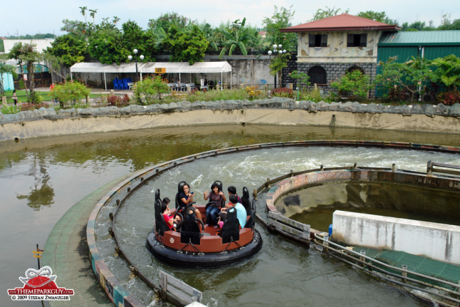
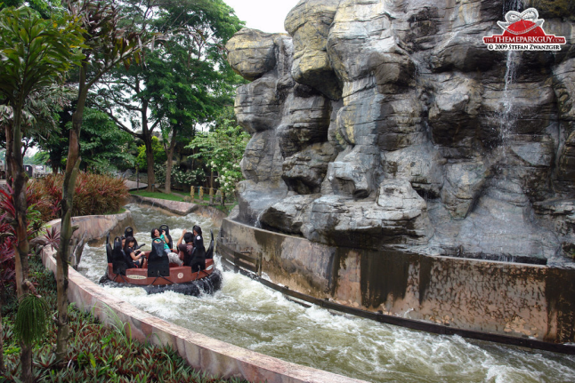
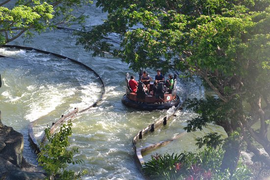

Rio Grande Rapids
Conquer the Churning Torrent
Prepare for a massive, churning aquatic expedition that stands as the largest water ride in the entire realm! The Rio Grande Rapids invites groups of brave travelers to climb aboard giant circular rafts and test their mettle against an unpredictable, rushing river system.
As your raft is cast out into the untamed currents, you will spin, bounce, and surge through unexpected twists and sudden drops. No two voyages are ever the same! Watch out for hidden water cannons and cascading waterfalls along the river banks. On this wild river adventure, getting absolutely soaked isn't just a possibility—it's a magical guarantee!
Visions of the Voyage


